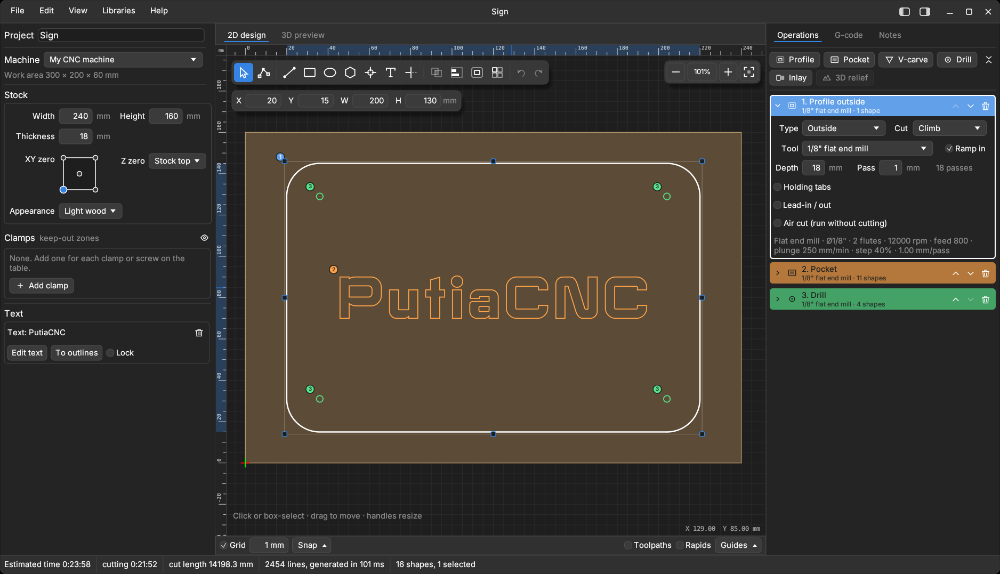
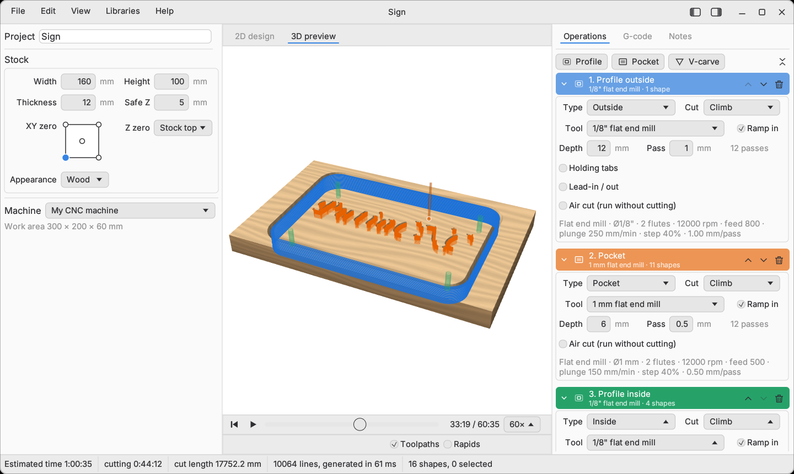

What it does
Drawing
Rectangles, ellipses, lines, polygons, stars, bolt circles, point grids and editable text in any installed font. Import SVG, DXF, bitmaps (traced into outlines or centre lines) and STL / OBJ models for 3D relief.
Editing
Object snap, typed values, node editing, trim and extend, fillet and chamfer, offset, combine, align, array, rotate, groups, and clean-up of broken outlines.
Operations
Profile (outside, inside, on the line), pocket, V-carve, drill, inlay and 3D relief, each with its own tool, depth, passes, ramp-in, holding tabs, lead-in / lead-out and air cut.
Preview and checks
2D canvas and simulated 3D stock with a play bar. Warnings for cuts too deep, into the table or clamps, outside the machine area, and rapids through material. The G-code is always written; the warnings only inform.
Tools and machines
Tool libraries (imperial and metric, with ready-made CMT, Amana, Bosch, Freud, Whiteside and Diablo sets), chip-load estimate, and machine profiles with your own start and end G-code.
Everything else
G-code tab with time estimate, project notes, keyboard shortcuts, light and dark themes, and projects saved as plain JSON files.
The full list, with every option, is in the feature guide.
Build from source
You need Rust 1.75 or newer and a C++ compiler. Install Rust from rustup.rs, then:
git clone https://github.com/tonyrh/putiacnc
cd putiacnc
cargo run --release -p putiacnc-gui